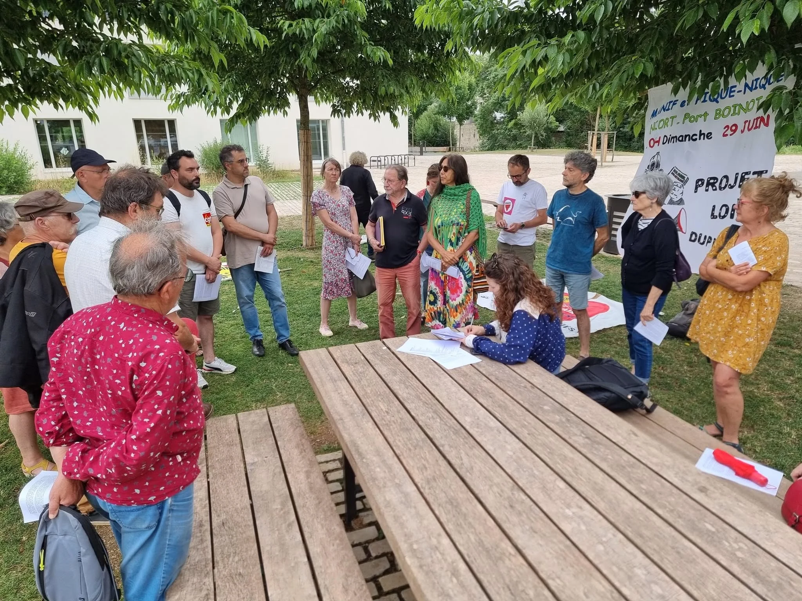
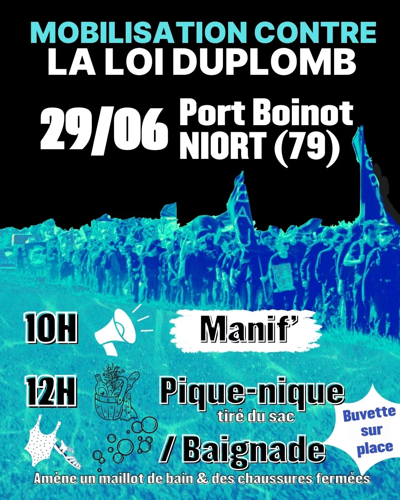
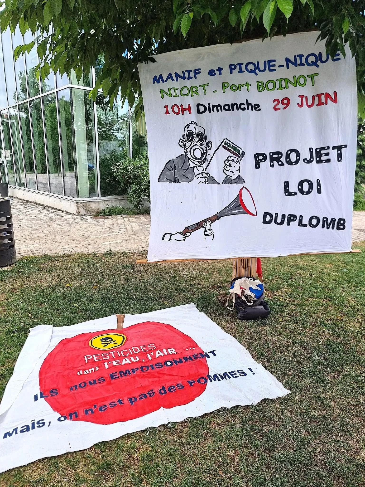
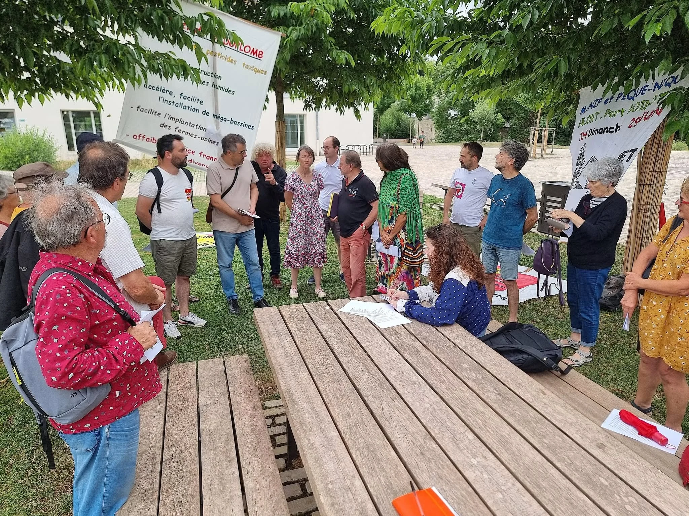
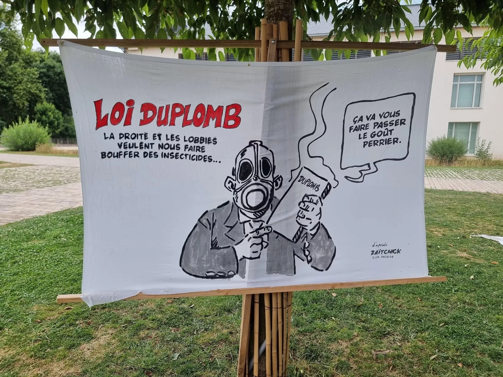

Compte rendu
Loi Duplomb. Les organisations mobilisées prennent la parole à Port Boinot
Date de mise à jour indiquée par Facebook · 26 juin 2025
Repères éditoriaux
À Niort, une conférence de presse à Port Boinot a présenté les motifs de la mobilisation du 29 juin. Les photos rendent compte de la conférence du 26 juin et l’affiche donne les horaires de la manifestation.
Texte de la publication · Bassines Nonmerci
Quelques images de la conférence de presse de ce matin à Port Boinot à Niort, où une vingtaine de personnes représentantes des différentes organisations appelant à se mobiliser dimanche 29 juin contre la Loi Duplomb étaient présentes ! Quand l'union fait la force !
Nous avons pu revenir sur les raisons de notre mobilisation et pourquoi il est important de venir massivement dimanche à Niort et de montrer notre opposition à cette Loi toxique !
En effet, elle veut entériner un retour massif de pesticides interdits depuis 2018 (comme les néonicotinoïdes), faciliter la destruction des zones humides, donner le feu vert aux méga-bassines et alléger les normes pour les ferme-usines.
Il s’agit d’un choix politique en faveur d’un modèle agricole productiviste et destructeur, au détriment du vivant, de notre santé et de l’intérêt général.
Ne laissons pas cette loi passer en silence, mobilisons-nous !
RDV DIMANCHE À PORT BOINOT
10H : MANIF'
12H : PIQUE-NIQUE & BAIGNADE
BUVETTE SUR PLACE
Pour la baignade : prévoyez maillot de bain & chaussures fermées et vous pouvez ramener aussi vos bouées, kayak, barque, radeau...
NON À LA LOI POISON, NON À LA LOI DUPLOMB !
La carte avec l'ensemble des mobilisations en France : https://umap.openstreetmap.fr/.../mobilisations-contre-la...
Avec : Apieee Deux-Sèvres Nature Environnement, Groupe Ornithologique des Deux-Sèvres - GODS, Agrobio Deux-Sèvres, UFC-Que Choisir79, INDECOSA79, Les Ami·e·s de la Confédération paysanne 79, Bassines Nonmerci79, Ligue des droits de l'Homme 79, Alerte Medecins Pesticides, LPO en Deux-Sèvres, @Biodiversité Balanin et Torchepot, la @Fédération Départementale de Pêche et de Protection du Milieu Aquatique 79 (FDAAPPMA), @Poitou Charentes Nature, CGT 79 Deux-Sèvres, Solidaires 79, Fsu-Snuipp 79, Confédération Paysanne Deux-Sèvres, France Insoumise 79, @Les Ecologistes 79, PCF 79 - Parti Communiste Français fédération des Deux-Sèvres, Génération.s79, @Parti Socialiste 79...





Sources
Bassines Nonmerci · publication relayée par le PCF 79 · bibliothèque Facebook · AR-0002-FB-01080
À lire aussi · Contre la loi Duplomb, rendez-vous à Port Boinot le 29 juin